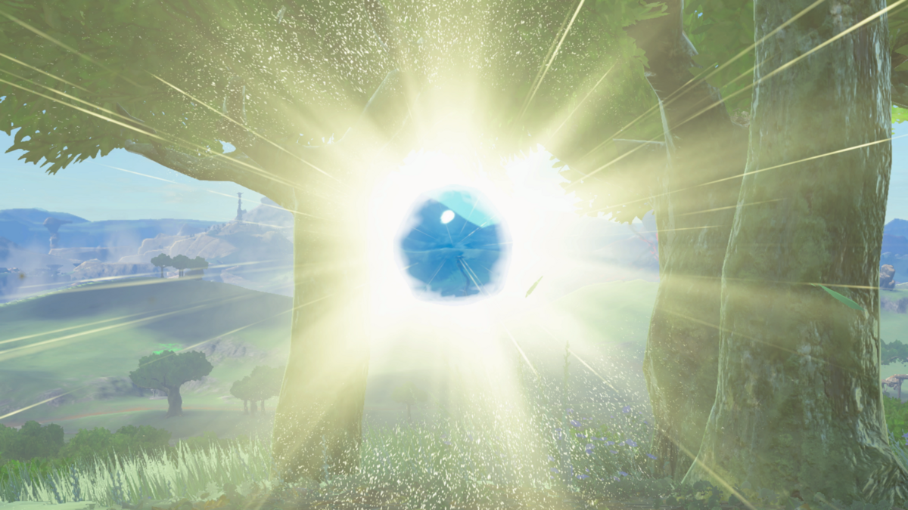

先说结论：剑在白龙头上
大德库树指路：大师之剑在白龙头上。追上它、登上龙头、按住拔剑，全程只看绿色精力——两圈满格才能把剑拔出来，黄色临时精力一格都不算。剑一到手，最后一段记忆「塞尔达的夙愿」随之揭开。
接取与奖励
| 项目 | 内容 |
|---|---|
| 接取 | 完成「大师之剑的线索」后，回克洛格森林与大德库树对话，自动开始 |
| 前置 | 大师之剑的线索（清理德库树深穴、与大德库树对话） |
| 位置 | 克洛格森林、海拉鲁上空 |
| 奖励 | 大师之剑、最后一段记忆「塞尔达的夙愿」 |
| 后续 | 讨伐加侬多夫 |
总览
| 步骤 | 内容 |
|---|---|
| 接任务 | 克洛格森林找大德库树，地图出现白龙的标记 |
| 凑精力 | 两圈绿色精力：初始一轮加 5 个耐力容器（20 个祝福之光） |
| 追龙 | 从鸟望台上天，滑翔靠近白龙，落到它身上 |
| 拔剑 | 走到龙头额头处，按住拔剑直到出鞘 |
分步攻略
1与大德库树对话接任务
完成上一任务「大师之剑的线索」后，回克洛格森林找大德库树（进森林的路线见上一任务：从地底点亮树根、通天术上去）。他会告诉你，大师之剑在白龙头上。接任务后地图上出现白龙的标记，标记跟着龙走。
如果你在接任务之前就已经拔到了大师之剑，这个任务接取后立即完成，不用再跑一趟。

2凑满两圈绿色精力
拔剑的硬门槛是两圈绿色精力：初始一轮，再加 5 个耐力容器，也就是 20 个祝福之光。精力不够先去打神庙，攒够了再来。
料理和药品加的黄色临时精力，拔剑时一格都不算，别指望靠它救急。
3追上白龙
白龙一直在海拉鲁上空巡游，地面上追不上。从附近的鸟望台弹射上天，在空中找到白龙的身影，借丘栗的风、张开滑翔伞慢慢靠近，落到它身上。

4登上龙头，走到剑前
落到龙身上后沿着龙身往前走，到龙头额头处，闪耀圣光的剑身就插在那里，走过去按下交互。
5按住拔剑，别松手
拔剑全程持续消耗精力，白龙还会剧烈挣扎。按住别松，直到剑出鞘。耐力不够会被弹开，那就再追上白龙试一次。
剑一拔出来，最后一段记忆「塞尔达的夙愿」随之揭开。

关键信息
| 项目 | 内容 |
|---|---|
| 任务类型 | 主线任务，第 21 篇 |
| 给予人 | 大德库树（克洛格森林） |
| 关键地点 | 克洛格森林、海拉鲁上空 |
| 关键道具 | 滑翔伞 |
| 关键数字 | 两圈绿色精力（5 个耐力容器、20 个祝福之光） |
| 大师之剑 | 攻击 30，靠近瘴气 45，对加侬多夫 60；能量耗尽后冷却恢复；满血时蓄力可发剑气 |
| 白龙素材 | 拔剑后顺手在白龙身上取素材（角、鳞片、爪子、牙齿），同一条龙取素材有 10 分钟冷却 |
容易翻车的地方
- 黄色临时精力当真：料理加的黄色精力拔剑时不算，必须是绿色两圈。
- 精力差一点就去拔：差半格也会被弹开，白跑一趟，先凑满再去。
- 拔到一半松手：龙一挣扎就松手等于前功尽弃，按住别放。
- 在地面上追龙：白龙一直在天上飞，地面上追不上，从鸟望台上天再找。
- 拔完剑扭头就走：白龙身上的素材很值钱，顺手取了再走。
一句话总结
大德库树指路、两圈绿色精力、追上白龙登上龙头、按住拔剑别松手——剑到手，最后一段记忆「塞尔达的夙愿」也随之揭开，下一站就是讨伐加侬多夫。